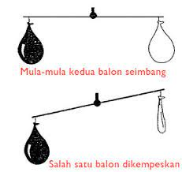

1. Sifat Zat
Semua jenis zat memliki sifat yang sama yaitu:
- Zat itu menempati ruang artinya benda tersebut memerlukan ruang atau tempat untuk keberadaannya seperti pada contoh Gambar 2 tersebut
- air dalam gelas artinya air menempati ruang bagian dalam gelas.
- Udara dalam balon artinya udara menempati ruang bagian dalam balon.
- Meja di sudut ruagan artinya meja menempati tempat di sudut ruangan.

- Zat mempunyai massa artinya benda bila ditimbang dengan neraca menunjukan nilai massa tertentu

Gambar 2. Zat mempunyai massa
Contoh : balon yang berisi udara massanya akan lebih berat di bandingkan dengan balon yang kempis. Hal ini menunjukan bahwa udara memiliki massa.